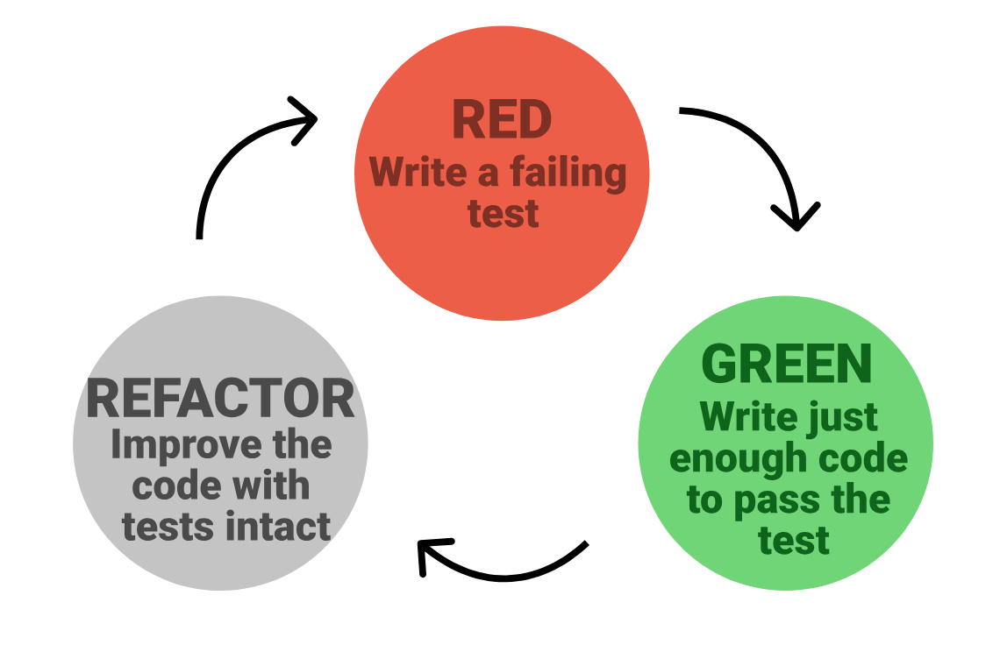

Introduction to Testing as a Design Tool
Last updated on 2026-07-16 | Edit this page
Overview
Questions
- Why should you write tests first?
- What are the 3 phases of TDD?
Objectives
- Start running tests with pytest.
- Replace the end-to-end test with a pytest version.
The Ultimate Challenge (Sort Of)
Welcome! We are going to kick things off with a practical coding challenge. No slides, no long lectures—just you, some code, and a classic geometry problem.
Here is your task:
Build a Python function that determines whether two 2D rectangles overlap.
That is it. That is the entire specification.
If you are thinking, “Wait, that’s incredibly vague,” you are exactly right. It is completely ill-defined, but it is entirely comprehensible. How do we represent a rectangle? What are the inputs? What does the function return?
Before we write a single line of code, we need to clear up the ambiguity.
Pre-Task: The 3-Minute Q&A Prep (5 mins)
- Get into groups of 2 or 3.
- Take 5 minutes to look at this prompt and figure out what questions you need to ask me (the instructor) to actually build this. What details are missing?
- We will then hold a 3-minute rapid-fire Q&A where you can ask me absolutely anything you want to pin down the requirements.
(Go ahead and run the 3-minute Q&A now with your instructor!)
The Curveball
Now that we have had our Q&A and you have a rough idea of what we are building, here is the curveball:
I do not want you to write the function.
At least, not yet. Instead, I want you to write tests for the function.
Writing tests before writing code might feel backward, but there is a profound method to this madness. To do this, we need a quick primer on what a test actually looks like under the hood.
Anatomy of a Test: The “AAA” Pattern
A good test is a self-contained story. In the software world, we structure this story using the AAA (Arrange, Act, Assert) pattern:
- Arrange: Set up the initial conditions. Create the data structures, variables, or inputs your code needs.
- Act: Run the actual function or calculation you want to test.
-
Assert: Check the result. In Python, we do this
using the
assertkeyword. If the statement afterassertisTrue, nothing happens and the test passes. If it isFalse, Python raises anAssertionErrorand the test fails.
Here is a quick conceptual example of what this looks like:
Writing Rules for Our Project
To write these tests, we need to establish a few basic rules and folder structures so our test runner can find them:
-
The Workspace: Create a dedicated folder on your
computer named
testing2026. Do all your work inside this directory. -
The Test File: Create a file in that folder named
test_overlap.py. -
The Naming Convention: Pytest (our test runner) is
picky. It will only look for tests if the file name starts with
test_and the test functions themselves start withtest_.
Exercise: Write the Tests (5 mins)
Open your editor, navigate to your testing2026 folder,
and write at least three different test cases inside
test_overlap.py.
- Think of different scenarios: two rectangles that clearly overlap, two that are miles apart, etc.
- Remember, you don’t have the actual
overlap.pyfile or the overlap function yet! You will have to pretend it exists. You will need to import it at the top of your test file (e.g.,from overlap import check_overlap). - Don’t run anything yet—just write the test code!
Running the Tests (and Watching Them Fail)
To run these tests, we are going to use a Python library called
pytest. If you don’t have it installed yet, install it now
from your terminal:
Now, navigate to your testing2026 folder in your
terminal and run the test runner:
Unsurprisingly, your tests should spectacularly fail. You will likely
see a giant red error screaming
ModuleNotFoundError: No module named 'overlap'.
Of course they failed! We haven’t written a single line of the actual overlap math yet.
Testing is a Design Tool
Take a step back and think about what just happened. To write those failing tests, you were forced to make a series of critical design decisions before you wrote any implementation logic.
Ask yourself: * What did you call your function? Was
it check_overlap, is_overlapping, or just
overlap? * How did you represent a
rectangle? Did you pass in four separate coordinates
(x1, y1, x2, y2)? Did you pass in tuples? Did you represent
them as a custom class, or perhaps center coordinates with a width and
height? * What does the function return? Does it return
a boolean (True/False), or does it return the
area of the overlap?
This is the first major realization of Test-Driven Development: Testing is not just a verification phase. Testing is a design tool.
By writing the tests first, you forced yourself to become the user of your own API before you became the creator. You designed a clean, logical interface without being distracted by the complicated coordinate math.
The TDD Cycle
What we just did is the first step of Test-Driven Development (TDD). TDD is a highly disciplined software workflow built on a tight, repeating three-step loop:

- RED: Write a test for a behavior you want, run it, and watch it fail.
- GREEN: Write the absolute simplest, dirtiest code possible to make the test pass.
- REFACTOR: Clean up your code, remove duplication, and improve the design while keeping the tests green.
Exercise: Write Code Until Things Go Green!
Now that you have your failing tests (Red) and you have locked down your design decisions, it is finally time to write the actual math.
Exercise: Get to Green (10 mins)
- Create a new file named
overlap.pyin yourtesting2026folder. - Define the overlap function using the exact name and coordinate
structure you decided on in your
test_overlap.pyfile. - Implement the logic to detect whether the rectangles overlap.
- Run
pytestin your terminal. - If it fails, tweak your math inside
overlap.pyuntil the terminal turns beautiful, satisfying green.
- TDD cycles between the phases red, green, and refactor
- TDD cycles should be fast, run tests on every write
- Writing tests first ensures you have tests and that they are working
- Making code testable forces better style
- It is much faster to work with code under test